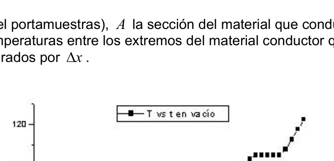
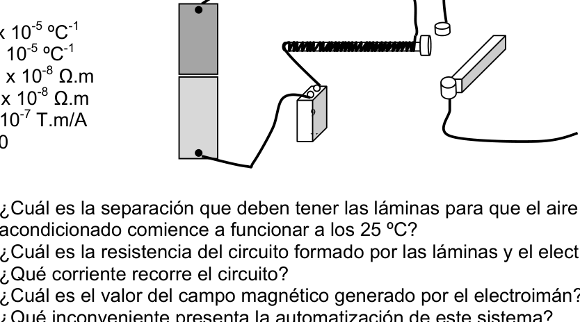

Thermal Cycling Device Resistive Circuit Cooling
PT24. Ciudad de Buenos Aires. Azul. Proyecto CONAE. Los dispositivos eléctricos que llevan los satélites espaciales se encuentran sujetos a condiciones muy desfavorables, por ejemplo están sometidos a radiación ionizante y, fundamentalmente, a bruscas variaciones de temperatura (considere la diferencia entre estar expuestos a los rayos solares y estar bajo la sombra que nuestro planeta les produce). Es por ello que es necesario realizar pruebas a los dispositivos antes de ser enviados al espacio. Para simular esas condiciones en los laboratorios de la CONAE (Comisión Nacional de Actividades Espaciales), que trabaja en colaboración con la NASA, se utilizan los denominados ciclados térmicos. Estos procesos consisten en analizar la respuesta eléctrica de los dispositivos mientras son mantenidos alrededor de una temperatura determinada. Para lograrlo se utiliza: un circuito calefactor y, para enfriar, se hace circular nitrógeno líquido (T = -200ºC aprox.). En la Fig. 5 pueden verse algunos de los componentes del dispositivo experimental.
Figura 5: Se observa un detalle de: el portamuestras, donde son ubicados los dispositivos; la serpentina, por el que se hace circular nitrógeno líquido (a T= -200ºC, aprox.); y el capuchón en el que se introduce la resistencia (alimentada por el circuito que muestra la Fig.6). El flujo de nitrógeno líquido tiene como función refrigerar mientras que la resistencia, calefacciona.
El circuito calefactor contiene una fuente que entrega una diferencia de potencial constante de 20V, un controlador de temperatura (Rint = 3Ω) y una resistencia de cartucho calefactora de 20 Ω, a temperatura ambiente (Ver la Fig. 6).
Figura 6: Circuito calefactor, alimenta la resistencia de cartucho (R=20Ω a temperatura ambiente considerándola a 25°C). El controlador posee una pequeña resistencia interna de 3Ω.
a) Suponga que usted trabaja en dicho laboratorio. Una de las principales medidas de seguridad tiene que ver con conocer el valor de corriente que circula. Averígüela. Cada dispositivo que se quiere estudiar es ubicado sobre el portamuestras (de cobre) de modo que se mantienen en contacto con la resistencia y con la serpentina. El controlador de temperatura posee dos posiciones: ACTIVADO y DESACTIVADO. Cuando se encuentra ACTIVADO, permite la circulación de corriente por el circuito calefactor, aumentando así la temperatura (notar que al circular corriente la resistencia calefactora disipa calor) e impidiendo el flujo de nitrógeno líquido. Mientras la resistencia esté calentando asumiremos que el dispositivo se encuentra en equilibrio térmico con ella. Cuando se encuentra DESACTIVADO, no permite la circulación de corriente (por el circuito de la Fig. 6) y abre la válvula para permitir la circulación de nitrógeno. De modo que ahora comienza a descender su temperatura (refrigeración). Para determinar cuándo se debe cambiar de posición hay una termocupla que constantemente sensa la temperatura sobre el circuito y maneja dichas posiciones. Al controlador se le ingresa un valor de temperatura fijo de modo que por encima de él permanece DESACTIVADO mientras que por debajo permanece ACTIVADO. La resistencia funciona básicamente disipando calor. El controlador está fijado en 900C pero el valor de la resistencia del cartucho calefactor se modifica con la temperatura como ( ) 0 1 R R T α
⋅ + ⋅∆ , donde ( ) 1 4 º 10 92 ,3 − − ⋅
C
α
y
0
R es el valor de
la resistencia a alguna temperatura
0
T conocida. Calcule:
b) la corriente que circula por el circuito justo antes de cortar el suministro.
Hasta aquí hemos hecho un análisis un tanto simplificado. Suponga que exactamente
a los 900C el circuito se encuentra funcionando y, a la vez, se produce circulación de
nitrógeno líquido. En ese caso se observan las mesetas (también llamadas plateaux)
de la Fig. 7. Durante ese plateau, calcule:
c) la potencia disipada por la resistencia y la energía entregada por la misma en forma
de calor.
La interpretación del plateau sería que todo el calor que la resistencia está disipando
está siendo absorbido por: la masa de nitrógeno que circula en ese intervalo de
tiempo, el portamuestras y el dispositivo. Un 75% de la potencia disipada es
consumida por el nitrógeno. El porcentaje restante es transmitido a través del
portamuestras al dispositivo. Supongamos que al cabo de un segundo han pasado por
la serpentina, estando en contacto con la resistencia calefactora, 7dl de nitrógeno. Y,
por otro lado, considere que el calor transmitido por conducción en una unidad de
tiempo se calcula como:
x
T
A
K
t
Q
∆
∆
⋅
⋅
siendo K la conductibilidad del material (del
que está hecho el portamuestras), A la sección del material que conduce y T ∆ la diferencia de temperaturas entre los extremos del material conductor que se encuentran separados por x ∆.
Figura 7: Dependencia de la temperatura con el tiempo. Se observan los plateaux de distintas duraciones.
d) la tasa de variación de la temperatura del nitrógeno por unidad de tiempo; e) la temperatura efectiva a la que se encuentra el dispositivo asumiendo que se encuentra sobre el portamuestras, de 5 x 10-5m2 de sección, pero a 15cm de la posición de la resistencia.
DATOS QUE PUEDEN SER ÚTILES KCu (conductividad del cobre) = 372,1 W / (m.K) CeN2 (calor específico del nitrógeno) = 29,12 J / (kg.K) δN2 (densidad del nitrógeno) = 1,251 gr / lt (lo tomaremos como constante aunque en realidad dependa de la presión y la temperatura)


Topic: Thermodynamics, Circuits Metodi: First Law of Thermodynamics, Kirchhoff’s Laws, Energy Conservation Method Competenze: Physical Reasoning, Mathematical Modeling, Experimental Data Analysis Objects: Resistor, Gas, Tube Fonte: Testo (PDF) — p.3
Thermal Cycling Device Resistive Circuit Cooling
PT24. Città di Buenos Aires. Blu. Progetto CONAE. I dispositivi elettrici che trasportano i satelliti spaziali sono soggetti a condizioni molto sfavorevoli, ad esempio sono sottoposte a radiazioni ionizzanti e, La temperatura varia in modo sostanziale (considerare la differenza) tra essere esposti ai raggi solari e essere sotto l’ombra del nostro pianeta li produce). Per questo è necessario eseguire test sui dispositivi prima di essere inviati nello spazio. Per simulare queste condizioni nei laboratori della CONAE (Commissione nazionale per le attività spaziali), che lavora in collaborazione Con la NASA, vengono utilizzati i cosiddetti cicli termici. Questi processi sono: analizzare la risposta elettrica dei dispositivi mentre sono mantenuti intorno a una temperatura determinata. Per questo si utilizza un circuito: il caldaio e, per raffreddare, si circola nitrogeno liquido (T = -200oC circa). En la Fig. 5 si possono vedere alcuni dei componenti del dispositivo sperimentale.
Figura 5: Si osserva un dettaglio di: il portafoglio di campioni, dove i dispositivi sono localizzati; la serpentina, per cui si circola nitrogeno liquido (a T= -200oC, appros.); e il cappuccio in cui si introduce resistenza (forzata dal circuito che figura 6), Il flusso di L’ nitrogeno liquido ha come funzione di raffreddamento mentre resistenza, riscaldamento.
Il circuito di riscaldamento contiene una fonte che fornisce una differenza di potenziale. 20V costante, un controllore di temperatura (Rint = 3Ω) e una resistenza di Cartuccio di riscaldamento 20 Ω, a temperatura ambiente (vedi Fig. 6).
Figura 6: Circuito di riscaldamento, alimenta la resistenza del cartuccio (R=20Ω a temperatura ambiente considerata 25°C). Il controllore possiede una piccola resistenza interna di 3Ω.
a) Supponiamo che lavori in tale laboratorio. Una delle principali misure di La sicurezza è la conoscenza del valore del corrente che circola. Scopri. Ogni dispositivo che si vuole studiare è posizionato sul portafoglio di campioni (di rame). Quindi, si mantengono in contatto con la resistenza e la serpentina. El il controllore di temperatura ha due posizioni: ACTIVO e DISACTIVO. Quando è ACTIVATO, permette la circolazione di corrente attraverso il circuito. Il caldaio, aumentando così la temperatura (nota che quando si circola corrente la resistenza Il caldaio dissipa il calore) e impedisce il flusso di nitrogeno liquido. Mentre la resistenza sta riscaldando presumendo che il dispositivo sia in equilibrio
- Termica con lei. Quando è disattivato, non permette la circolazione di (per il circuito di Fig. 6) e apre la valvola per consentire la circolazione di
- L’azoto. Quindi ora inizia a scendere la sua temperatura (rifrigerazione). Per determinare quando cambiare posizione c’è una termopoppella che Senti la temperatura sul circuito e gestisce queste posizioni. Al il controller viene inserito un valore di temperatura fisso in modo che sopra di esso rimane ACTIVO mentre sotto rimane ACTIVO. La resistenza funziona fondamentalmente dissipando il calore. Il controller è fissato su 900C ma il valore di resistenza del cartuccio riscaldatore viene modificato con la temperatura come ( ) 0 1 R R T α = ⋅
⋅∆ , dove ( ) 1 4 º 10 92 ,3 − − ⋅
C α y 0 R è il valore di resistenza a una temperatura determinata 0 Non conosci. Calcola: b) il corrente che circola nel circuito appena prima di interrompere la fornitura. Finora abbiamo fatto un’analisi un po’ semplificata. Supponiamo che esattamente A 900 C il circuito è in funzione e, allo stesso tempo, si produce una circolazione di nitrogeno liquido. In questo caso si osservano le alte montagne (chiamate anche plateaux). della Fig. 7. Durante quel plateau, calcola: c) la potenza dissipata dalla resistenza e l’energia fornita dalla resistenza in forma di calore. L’interpretazione del plateau sarebbe che tutto il calore che la resistenza sta dissipando L’acqua viene assorbita da: la massa di nitrogeno che circola in questo intervallo di tempo, il portafoglio e il dispositivo. Il 75% della potenza dissipata è consumata dall’azoto. Il restante percento viene trasmesso attraverso il portatile del dispositivo. Supponiamo che dopo un secondo abbiano passato per la serpentina, in contatto con la resistenza al riscaldamento, 7dl di nitrogeno. Y, In altre parole, si consideri che il calore trasmesso da conduzione in un’unità di il tempo è calcolato come: x T A K t Q ∆ ∆ ⋅ ⋅
K è la conducibilità del materiale (del
che è fatto il campione), A la sezione del materiale che conduce e T ∆ la differenze di temperatura tra le estremità del materiale conduttore che si trovano separati da x ∆.
Figura 7: Dipendenza della temperatura nel tempo. Si osservano i piattaforme di diverse durate.
(d) il tasso di variazione della temperatura dell’azoto per unità di tempo; e) la temperatura effettiva al quale si trova il dispositivo, si trova sopra il portafoglio, di 5 x 10-5m2 di sezione, ma a 15 cm dalla posizione della resistenza.
Dati che possono essere utili KCu (conduttività del rame) = 372,1 W / (m.K) CeN2 (calore specifico dell’azoto) = 29,12 J/ (kg.K) δN2 (densità di nitrogeno) = 1.251 gr / lt (si prenderà come costante anche se in la realtà dipende dalla pressione e dalla temperatura)
Topic: Thermodynamics, Circuits Metodi: First Law of Thermodynamics, Kirchhoff’s Laws, Energy Conservation Method Competenze: Physical Reasoning, Mathematical Modeling, Experimental Data Analysis Objects: Resistor, Gas, Tube Fonte: Testo (PDF) — p.3
The following information shall be provided:
PT24. City of Buenos Aires. Blue, please. Project CONAE The electrical devices carried by space satellites are subject to very unfavorable conditions, for example, are subjected to ionizing radiation and, The main difference is that the temperature is very low. Between being exposed to the sun ‘s rays and being in the shadow of our planet . It produces them). This is why it is necessary to test the devices before to be sent into space. To simulate these conditions in the laboratories of the CONAE (National Space Activities Commission), which works in collaboration With NASA, what’s called thermal cycles are used. These processes consist of: in analysing the electrical response of devices while they are maintained around a certain temperature. To achieve this, a circuit is used. The heaters are heated and liquid nitrogen is circulated to cool (T = -200oC approx.). En la Fig. 5 some of the components of the experimental device can be seen.
Figure 5: A detail is noted of: the sample port, where the devices are located; The serpentine, by which it is It circulates liquid nitrogen (at T= -200oC, approx.); and the cap in which it is It introduces resistance. (powered by the circuit that Figure 6 shows. The flow of Liquid nitrogen has as cooling function while resistance, heating.
The heating circuit contains a source that delivers a potential difference The test results shall be presented in accordance with the following conditions: Heating cartridge of 20 Ω, at room temperature (see Fig. 6).
Figure 6: Heating circuit, feeding the cartridge resistance (R=20Ω to ) the ambient temperature is 25°C). The driver has a small one. The following conditions shall apply:
(a) Suppose you work in that laboratory. One of the main measures of Safety is about knowing the value of the current that’s circulating. Find out what it is. Each device to be studied is placed on the sample wallet (copper). So they stay in touch with the resistance and the serpentine. El The temperature controller has two positions: ON and OFF. When ON, it allows the flow of current through the circuit. The heating system is a heating system, thus increasing the temperature (note that when running current the resistance The heating system dissipates heat and prevents the flow of liquid nitrogen. While the resistance is heating we ‘ll assume the device is in balance thermal with it. When deactivated, it does not allow the circulation of The current (by the circuit of Fig. 6) and opens the valve to allow the circulation of nitrogen. So now it starts to drop its temperature (cooling). To determine when to change position there is a thermocouple which constantly sensing the temperature over the circuit and handling these positions. Al The controller is entered a fixed temperature value so that above it remains DEactivated while below remains ACTIVE. Resistance works basically by dissipating heat. The controller is fixed to 900C but the resistance value of the heating cartridge is modified with the temperature as ( ) 0 1 R R T α
⋅ + ⋅∆ , where ( ) 1 4 º 10 92 ,3 − − ⋅
C α y 0 R is the value of resistance to some temperature 0 You know. Calculate: (b) the current flowing through the circuit just before the supply is cut off. So far we have done a somewhat simplified analysis. Suppose that exactly At 900C the circuit is running and at the same time circulation is produced. liquid nitrogen. In this case, the plateaus (also called plateaux) are observed. of the Fig. 7. During that plateau, calculate: (c) the power dissipated by the resistance and the energy delivered by the resistance in the form of It’s hot. The plateau interpretation would be that all the heat that the resistance is dissipating It is being absorbed by: the mass of nitrogen circulating in that range of time, sample wallet and device. 75% of the power dissipated is It’s consumed by nitrogen. The remaining percentage is transmitted through the sample portfolios to the device. Let ‘s say after a second you ‘ve gone through The serpentine, in contact with the heating resistance, 7dl nitrogen. Y, On the other hand, consider that the heat transmitted by conduction in a unit of time is calculated as: x T A K t Q ∆ ∆ ⋅ ⋅
K being the material’s conductivity (of
The sample is made of the sample, A section of the material leading to and T ∆ la The difference in temperature between the ends of the conductive material is Find separated by x ∆.
Figure 7: Temperature dependence over time. The following are the results: Plateaux of different lengths.
(d) the rate of change in nitrogen temperature per unit of time; (e) the actual temperature at which the device is located assuming that it is The sample box is 5 x 10-5m2 but 15cm from the position of the resistance.
Data That Can Be Useful The value of the underlying assets shall be reported in the following column: The following is the list of the nitrogen-specific heat-treatment targets: δN2 (nitrogen density) = 1.251 gr/lt (we will take it as constant although in (reality depends on pressure and temperature)
Topic: Thermodynamics, Circuits Metodi: First Law of Thermodynamics, Kirchhoff’s Laws, Energy Conservation Method Competenze: Physical Reasoning, Mathematical Modeling, Experimental Data Analysis Objects: Resistor, Gas, Tube Fonte: Testo (PDF) — p.3